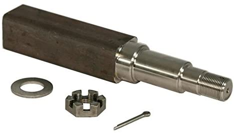
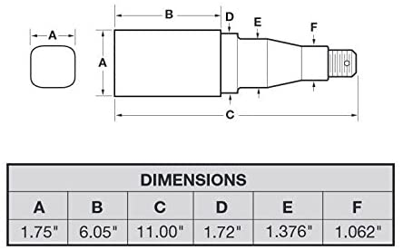

spindles
^ Parts infobox ^^
| image | Image 123927839.jpg |
| designers | |
| date | |
| vitamins | |
| materials | |
| transformations | |
| lifecycles | |
| tools | |
| parts | |
| techniques | |
| files | |
| suppliers | |
| git | |
Introduction

In an automobile, the wheel spindle, sometimes simply called the spindle, is a part of the suspension system that carries the hub for the wheel and attaches to the upper and lower control arms.
Spindles are carried by steering knuckles or "uprights". Although, the terms "steering knuckle" and "upright" are sometimes used interchangeably with "spindle", they refer to different parts.
Challenges
Approaches

- 40mm square stub axle
- FlexiRide Torsion half axle and mounting plate
- RigidHitch.com: Trailer Axle Spindle for 1-3/8 to 1-1/16 I.D. Bearings plus machining
- RigidHitch.com: Timbren® Axle-Less Suspension - 3,500 lb Capacity/Pair (hole spacing near 40mm and 60mm)